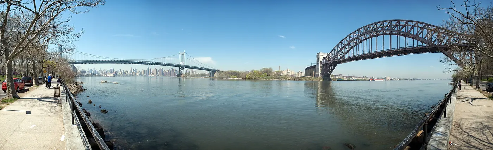

Astoria, Queens: Greek food and a local pace
Astoria is where a lot of New Yorkers go for dinner, and it is the easiest part of Queens to like on a first visit: Greek bakeries and tavernas, a film museum, a park with a skyline view, and the N/W train from Midtown.
Checked 2 November 2026. Prices, opening hours and transport details were verified against official sources. Things change — confirm before you book. How we check.
The other side of the river
Astoria sits directly across the East River from the Upper East Side, and the waterfront gives you the Manhattan skyline without the Midtown prices. The neighbourhood is Greek by history, diverse by reality, and serious about food.
The eating is concentrated around Ditmars Boulevard and 30th Avenue: bakeries in the morning, tavernas at night, and the smell of grilling seafood on summer evenings. Walk the side streets between them; Astoria is low-rise and quiet, and the houses are worth the detour.
For a break from food, the Museum of the Moving Image is one of the best film museums in the city, and Astoria Park has a pool, a waterfront and the Queensboro Bridge overhead. Both are a short walk from the N/W, which makes a half-day easy to plan.

Streets, parks and a museum
Four stops that show you Astoria beyond the restaurant strip.
Ditmars Boulevard
The restaurant strip: Greek tavernas, bakeries and the queues that tell you where to eat.
Astoria Park
Waterfront lawns and the pool, with the Queensboro Bridge overhead and the skyline across the river.
Museum of the Moving Image
Film and television history in a purpose-built museum, a short walk from the N/W.
Steinway Street
Little Egypt: Egyptian bakeries, grills and shisha cafés on the blocks around Steinway.
Eating and drinking in Astoria
Greek food is the tradition and the reason to come. Prices are a guide.
| Place | What to order | Price |
|---|---|---|
| Taverna Kyclades | Grilled fish and Greek classics | moderate |
| Greek bakeries | Spanakopita, loukoumades and coffee | budget |
| Steinway Street grills | Egyptian mixed grill, shared | moderate |
| Neighbourhood food carts | A late souvlaki or taco | budget |
An afternoon and evening in Astoria
Museum first, food second, waterfront at sunset; the neighbourhood is compact and flat.
-
13:00 — Museum of the Moving Image
Two hours is enough for the main galleries, and the museum is a short walk from the subway.
-
15:00 — Ditmars Boulevard
Walk the restaurant strip and the side streets behind it, stopping at a bakery.
-
16:30 — Astoria Park
Head to the waterfront for the bridge, the pool and the skyline across the river.
-
18:30 — Sunset
Stay on the waterfront as the light goes; Manhattan puts on its evening face opposite.
-
19:30 — Dinner
A taverna on or near Ditmars, ideally one with a queue of locals rather than tourists.
Getting there and getting it right
The N/W runs to Astoria–Ditmars Boulevard, about 20 minutes from Midtown, and stops along 31st Street on the way. The M/R serve Steinway Street for the Little Egypt blocks. Once you are there, the neighbourhood is flat and walkable; Ditmars, 30th Avenue and the park are within 15 minutes of each other.
Dinner time is the busiest and the liveliest. Weekday lunch is calm, and the bakeries are best mid-morning. Weekend brunch fills the cafés on Ditmars and 30th Avenue. If you want the waterfront to yourself, go on a weekday evening before the restaurants fill.
Nearby and worth your time
Astoria is a short ride from the other Queens food districts and 20 minutes from Midtown.


Astoria questions
Is Astoria worth visiting?
Yes, especially if you like food and want a neighbourhood that feels local rather than staged. It is 20 minutes from Midtown and pairs easily with a Manhattan day.
How do I get to Astoria?
The N/W runs to Astoria–Ditmars Boulevard, and the M/R stops at Steinway Street. From Midtown the trip is about 20 minutes.
What food is Astoria known for?
Greek food, above all: bakeries, tavernas and grilled seafood, reflecting the neighbourhood's Greek heritage. There is also a strong Egyptian food scene on Steinway Street.
What can I do in Astoria besides eat?
The Museum of the Moving Image, Astoria Park and the waterfront, and the side streets of low-rise houses. A half-day is enough for two of those plus a meal.